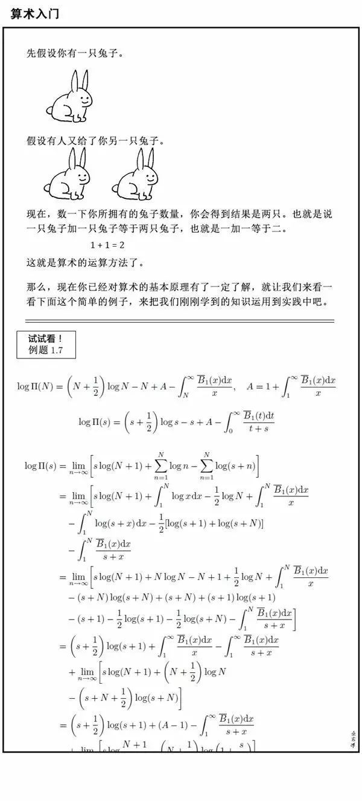
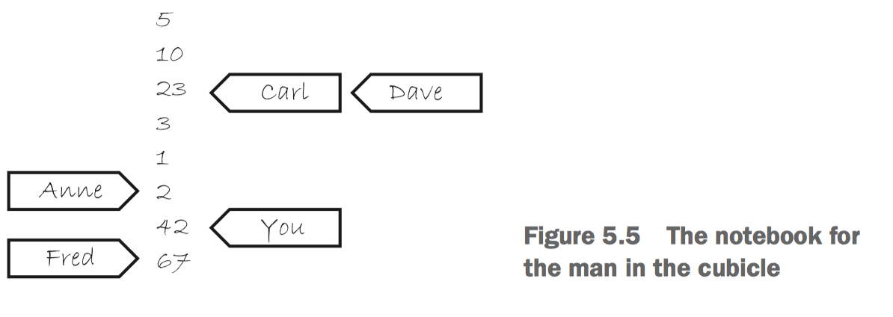

并发编程基础 - C++原子操作语义和内存模型
Contents
本篇介绍 C++11 内存模型以及原子操作语义。
Correct me if I’m wrong.
内存模型为 C++ abstract machine 定义了内存存储的语义。内存模型包含两方面，structural 部分关于元素的布局，concurrency 关于并发。
byte 是内存里的最小单元，定义为连续的 bits. 从 C++14 起，一个 byte 足够容纳 UTF-8 编码单元 (256 个不同值) 和基本执行字符集（96 个字符，要求必为单字节）。和 C 一样，C++ 也支持 8bit 或者更大的字节。C++ 里的所有数据都是由 object 构成的。这个对象不是说你可以写一个继承自 int 的类，或者基础数据类型存在成员函数，这个对象不是 OO 语言里的对象。无论一个对象是什么类型，这个对象都存储在一个或者多个 内存位置。可以把内存位置理解为内存地址。注意为了实现 C++，比如实现虚函数用到了虚指针，所以存在一些额外的内存位置，是不希望程序访问的。
内存模型的剩余部分就关于并发，这也是本篇的主要内容。进入正题前讲一点背景，为什么内存模型需要定义并发时的内存操作行为。如果两个线程访问同一个内存位置，存在一个不是原子操作，且至少存在一个进行写操作，并且这两个操作没有一个明确的先后关系，那么这是一种 data race，会导致未定义行为。C/C++ 里发生未定义行为是危险，无保障的。当然了，解决 data race 显然是可以用互斥锁，条件变量之类的同步原语。但是还存在另一种解决方法，就是原子操作。众所周知，原子操作的效果是这个操作的原子性，即这个操作要么没发生，要么已完成，无法观察到这个操作执行了一半的某种不完整状态。但是如前所述，原子操作更大的好处是可以建立起内存操作 (尤其是非原子操作) 之间的先发生关系(happens-before)，从而避免 data race。
atomic types
C++ 的标准原子类型在 <atomic> 头文件里。这些 atomic types 的所有操作都是原子的，C++标准定义下也只有这些类型的操作是原子的(显然你可以用 mutex 之类的同步原语自己实现原子性)。原子指的是无法观察到操作执行了一半的不完整状态。举个例子，int x=0; 两个线程分别 x++ 1000次，最终 x 大概率是不等于 2000 的，x++ 其实会拆成读 x，然后算 x+1，再把结果写会 x 几个操作，可能有两个线程读到同一个 x 值，然后各自算 x+1，最后写会 x+1，这样就少加了一次，因为读到了不完整状态。而使用 std::atomic<int> x = 0;，使用 fetch_add 就能解决这个问题，因为对 int 自增是非原子的，而 std::atomic<int>::fetch_add 是原子的。
注意，atomic types 的原子性是从语言标准层面说的，具体实现可能是基于 CPU 提供的原子操作指令，也可能是基于锁的。通过 is_lock_free() 成员函数可以判断这个原子类型是否是 lock-free 的。std::atomic_flag 不提供 is_lock_free()，这个类型就是个布尔类型(注意与 std::atomic_bool 区分)，标准要求这个类型的操作必须实现成 lock-free 的。当然了，大多数平台的内建类型对应的原子类型是 lock-free 的，比如 atomic<int>, atomic<void*> (这不是强制要求)。
标准原子类型是不能进行拷贝和赋值的，它们没有拷贝构造函数和拷贝赋值操作符。但是，它们可以与对应的内建类型进行隐式转换，所以支持从对应内建类型赋值，或者使用对应内建类型进行 load() 和 store()、 exchange()、 compare_exchange_weak() 和 compare_exchange_strong()。它们也支持复合赋值符：+=, -=, *=, |= 等等。当然，这些操作也有功能相同的成员函数所对应：fetch_add(), fetch_or() 等。
初等 std::atomic 模板可用任何满足可复制构造 (CopyConstructible) 及可复制赋值 (CopyAssignable) 的可平凡复制 (TriviallyCopyable) 类型 T 特化。下列值都得为真：
std::is_trivially_copyable<T>::valuestd::is_copy_constructible<T>::valuestd::is_move_constructible<T>::valuestd::is_copy_assignable<T>::valuestd::is_move_assignable<T>::value
大概就是如果你想用 std::atmoic<UserDefineType>，那么这个 UserDefineType 不能自定义拷贝赋值函数，不能有虚基类，虚函数，表现起来就是一个纯数据的结构体。这不重要啦，因为这样的 atomic 类型未必是 lock-free 的。
原子类型的每个操作都有一个可选的 memory-ordering 参数，可选项是 std::memory_order 枚举，默认值是最强的内存序 std::memory_order_seq_cst。1
2
3
4
5
6
7
8typedef enum memory_order {
memory_order_relaxed,
memory_order_consume,
memory_order_acquire,
memory_order_release,
memory_order_acq_rel,
memory_order_seq_cst
} memory_order;
原子操作可以分为下面几种：
- Store 操作，可以选择
memory_order_relaxed,memory_order_release,memory_order_seq_cst - Load 操作，可以选择
memory_order_relaxed,memory_order_consume,memory_order_acquire,memory_order_seq_cst - Read-modify-write 操作，可以选择
memory_order_relaxed,memory_order_consume,memory_order_acquire,memory_order_release,memory_order_acq_rel,memory_order_seq_cst
这里不展开介绍各个 atomic 类型的每个操作的用法，这部分内容可以查 cppreference 之类的文档。原因之前也讲过了，利用原子操作可以避免原子变量本身处于操作半完成的状态，但是本文更关注原子操作在并发编程中建立同步关系的应用，不是所有问题都可以像前面一样只利用简单的原子操作解决。学会利用 std::atomic 上的原子操作搭配合适的 memory_order 进行同步 (跨线程建立原子变量的同步关系，从而对非原子的操作建立同步关系)，可以在互斥锁之外增加并发编程的可选项。
基本概念
为了确保文章质量，我会尽可能避免写出错误的观点（如果我错了请纠正我）。这方面的内容比较复杂，在学的时候也感到比较困扰。网上的帖子、书上可能会在一些地方讲的有出入或者不够清晰，所以专门写一节 基本概念，内容尽量按优先级来自 c++ 标准，cppreference，C++ Concurrency in Action。我会先给出英文和出处，然后用中文做一些解释。
首先建议已经了解离散数学里的偏序关系和全序关系。
- Two expression evaluations conflict if one of them modifies a memory location (1.7) and the other one accesses or modifies the same memory location. [c++ standard 1.10]
- The execution of a program contains a data race if it contains two conflicting actions in different threads, at least one of which is not atomic, and neither happens before the other. Any such data race results in undefined behavior. [c++ standard 1.10]
- If one evaluation modifies a memory location, and the other reads or modifies the same memory location, and if at least one of the evaluations is not an atomic operation, the behavior of the program is undefined (the program has a data race) unless there exists a happens-before relationship between these two evaluations.[cppreference]
上面这三句话定义了 conflict 和 data race。如果两个操作针对同一个 memory location，其中至少一个是写入，那么这俩操作是冲突的。如果至少其中一个是非原子且没有 happens before(后面给出定义，大概就是一个比另一个先发生，学过分布式的应该都知道 lamport 提出的这个概念) 另一个的，那么这个程序是存在 data race 的。任何这种 data race 导致 undefined behavior。C++ 14 的 data race 会比这个复杂一点，和 signal handler 有关这里不讨论。
- The library defines a number of atomic operations (Clause 29) and operations on mutexes (Clause 30) that are specially identified as synchronization operations. These operations play a special role in making assignments in one thread visible to another. A synchronization operation on one or more memory locations is either a consume operation, an acquire operation, a release operation, or both an acquire and release operation. A synchronization operation without an associated memory location is a fence and can be either an acquire fence, a release fence, or both an acquire and release fence. In addition, there are relaxed atomic operations, which are not synchronization operations, and atomic read-modify-write operations, which have special characteristics.[c++ standard 1.10]
c++ library 定义了一些原子操作和互斥操作，统称 synchronization operations(下面可能简写成 sync op)。这些操作在跨线程同步的时候做可见性保证。synchronization operation 分成这几种：consume operation, acquire operation, release operation, both an acquire and release operation. 没有关联到特定 memory location 的 sync op 是 fence，can be either an acquire fence, a release fence, or both an acquire and release fence。另外，relaxed atomic operations 不是 sync op，原子 read-modify-write 操作有一些特殊性质。这段话说了什么是 sync op，以及 sync op 的几种类型，这个分类在下面会用到。
- All modifications to a particular atomic object M occur in some particular total order, called the modification order of M. If A and B are modifications of an atomic object M and A happens before (as defined below) B, then A shall precede B in the modification order of M, which is defined below.[ Note: This states that the modification orders must respect the “happens before” relationship. — end note ] [ Note: There is a separate order for each atomic object. There is no requirement that these can be combined into a single total order for all objects. In general this will be impossible since different threads may observe modifications to different objects in inconsistent orders. — end note ][c++ standard 1.10]
- All modifications to any particular atomic variable occur in a total order that is specific to this one atomic variable.[cppreference]
- Every object in a C++ program has a modification order composed of all the writes to that object from all threads in the program, starting with the object’s initialization. In most cases this order will vary between runs, but in any given execution of the program all threads in the system must agree on the order. If the object in question isn’t one of the atomic types described in section 5.2, you’re responsible for making certain that there’s sufficient synchronization to ensure that threads agree on the modification order of each variable. If different threads see distinct sequences of values for a single variable, you have a data race and undefined behavior (see section 5.1.2). If you do use atomic operations, the compiler is responsible for ensuring that the necessary synchronization is in place.[C++ Concurrency in Action 5.1.3]
上面前两段话说明了原子对象的修改顺序。每个原子对象 M 都有一个关于自己的修改操作的顺序，这是一个单独的全序，叫做 modification order。意思就是对于一个特定的原子对象 M，所有对他的写入，最终在 M 看来都是按照 modification order 的顺序逐一生效的。如果 A 和 B 都是对 M 的修改，并且 A happens before B，那么在 M 的修改顺序里，A 应该在 B 的前面。最后一段意思大概是说每个对象 (包括非原子) 都有一个 modification order，原子对象确保所有线程都看到这个 modification order，达成共识。而非原子对象天然没有这个保证，如果不同线程没有达成共识，可能不同线程看到不一样的 order，那就产生了 data race，ub 了，所以你就得通过合适的同步确保所有线程达成共识。
A visible side effect A on a scalar object or bit-field M with respect to a value computation B of M satisfies the conditions:
- A happens before B and
- there is no other side effect X to M such that A happens before X and X happens before B.
The value of a non-atomic scalar object or bit-field M, as determined by evaluation B, shall be the value stored by the visible side effect A. [ Note: If there is ambiguity about which side effect to a non-atomic object or bit-field is visible, then the behavior is either unspecified or undefined. — end note ] [ Note: This states that operations on ordinary objects are not visibly reordered. This is not actually detectable without data races, but it is necessary to ensure that data races, as defined below, and with suitable restrictions on the use of atomics, correspond to data races in a simple interleaved (sequentially consistent) execution. — end note ]
[c++ standard 1.10]
非形式化地说，读操作 B 读取对象 M，读到的值应该是 happens before 关系中，B 前面离 B 最近的一个写操作 A 对 M 写入的值。因为 hb 是偏序关系而不是全序关系，所以这样的 A 未必是唯一的，此时行为是 unspecified 或者 undefined 的。（严格地按照C++ 11标准来说，由于携带依赖和依赖先序的存在，hb 并不总是具有传递性，所以不是严格的偏序）
TODO: visible sequence of side-effects
Happens Before 关系
前文说的一些概念，包括很多对内存模型的解释，都会频繁地提到 Happens Before。这个 happens before 是分布式领域专家（图灵奖得主、LaTeX初代作者） Lamport 老爷子在讨论分布式系统时钟的著名论文 Time, Clocks, and the Ordering of Events in a Distributed System 提出的，用潜在的因果关系来对分布式系统中的事件构造一种偏序关系，这里不想扯太多分布式的内容（分布式的话题很大，很值得讨论）。在 C++ 标准，Java Memory Model 里，都会借用 Happens Before 的概念，对多线程的执行中的每个操作（把线程看做分布式系统中不同节点的进程）构建 happens before 关系，可能具体标准有细节偏差，但大概的思路是，如果 A happens before B (后面可能会简写为 hb(A, B))，那么写入操作 A 的效应应该对读取操作 B 可见（当然如果有 hb(A,C) && hb(C, B)，那么读取 B 应该看见写入 C 的效应，A 被 C 覆盖）。
这一节会讲解什么是 happens before 关系。直观地留一个印象，非形式化地描述，happens before 为多线程程序里的操作建立一个谁先发生的关系，happens before 由两部分构成。一部分是线程内程序执行的先后顺序，也就是不考虑并发只有单线程的时候代码执行的顺序，这个顺序很直观。另一部分是跨线程建立的线程间同步关系，比如线程 A 解锁 mutex，线程 B 对 mutex 获得了锁，显然得 A 先解锁 mutex，才能后 B 获得锁，比如线程 A 对某个原子变量写入值 233，线程 B 从这个原子变量读到了值 233，那么直观上应该是 A 先写入，B 才能后读到。直观地看，这两部分的先后关系加上传递性，就是 happens before 关系。
Within the same thread, evaluation A may be sequenced-before evaluation B, as described in evaluation order. [cppreference]
首先从单线程的情况开始，C++ 标准在单线程里定义了 sequenced-before 的关系，大概描述了单线程代码的先后顺序，直观来说就是代码执行的顺序，比如代码 x=5; y=6; 可以说 x=5; sequenced-before y=6;。但是在细节上有很多坑，比如说 i = i++ + i++; 这种代码是有 ub 的，f(a(), b(), c()); 这个代码里 a, b, c 的调用顺序是没有谁先谁后的规定的，这方面的细枝末节不是本文的重点，请自行查看标准或者cppreference。
Certain library calls synchronize with other library calls performed by another thread. For example, an atomic store-release synchronizes with a load-acquire that takes its value from the store (29.3). [ Note: Except in the specified cases, reading a later value does not necessarily ensure visibility as described below. Such a requirement would sometimes interfere with efficient implementation. — end note ] [ Note: The specifications of the synchronization operations define when one reads the value written by another. For atomic objects, the definition is clear. All operations on a given mutex occur in a single total order. Each mutex acquisition “reads the value written” by the last mutex release. — end note ] [c++ standard 1.10]
接着是 synchronizes-with 关系，C++ 标准的给定义是，一些特定的库调用 synchronizes-with 另一个线程的特定库调用。比如原子的 store-release 操作 synchronizes-with 另一个线程里看到了这个 store 写入值的 load-acquire 操作。
可以发现，sequenced-before 关系描述了线程内（intra-thread）的先后关系，synchronizes-with 关系描述了跨线程（inter-thread）的先后关系。我们已经接近 happens before 关系的定义，然而完整的标准还包括 carries a depency 和 dependency-ordered before 关系。这俩的存在破坏了 hb 的传递性，从而 hb 不是严格的偏序关系。而且按照 cppreference 的说法，这种精细的依赖分析截至2015年还没有编译器能做到，consume operation 会提升为 acquire operation，从 c++ 17 开始，The specification of release-consume ordering is being revised, and the use of memory_order_consume is temporarily discouraged. 这有点烦。但是为了完整性，我接下来会讲解这两个关系，然后开始对 happens before 关系进行定义。
如果觉得头痛可以先选择性忽视这两个关系以及 consume operation，直接跳到 happens before 的定义，并修改 hb 的定义，暂时认为 inter-thread happens before 就是 synchronizes-with，且 hb 关系具有传递性，跳过的这部分可以回过头再重新看（不看也没事..）。
An evaluation A carries a dependency to an evaluation B if
- the value of A is used as an operand of B, unless:
- B is an invocation of any specialization of std::kill_dependency (29.3), or
- A is the left operand of a built-in logical AND (&&, see 5.14) or logical OR (||, see 5.15) operator, or
- A is the left operand of a conditional (?:, see 5.16) operator, or
- A is the left operand of the built-in comma (,) operator (5.18);
or
- A writes a scalar object or bit-field M, B reads the value written by A from M, and A is sequenced before B, or
- for some evaluation X, A carries a dependency to X, and X carries a dependency to B.
[ Note: “Carries a dependency to” is a subset of “is sequenced before”, and is similarly strictly intrathread. — end note ] [C++ standard 1.10]
A carries a dependency B 直观上的意思就是求值 B 依赖了求值 A，第一条的一些特例是斩断这种依赖（通过 kill_dependency 显式切断，或者由于 && 的短路逻辑切断等）。第三条让这个关系具有传递性。这个关系可以看做是 sequenced before 关系的子集，因为有些语句没有依赖关系。举个例子：
1 | void producer() |
A release sequence headed by a release operation A on an atomic object M is a maximal contiguous subsequence of side effects in the modification order of M, where the first operation is A, and every subsequent operation
- is performed by the same thread that performed A, or
- is an atomic read-modify-write operation.
在 dependency-ordered 的定义中要用到 release sequence 的概念， release sequence 指的是对原子对象 M 的 modification order 里 release 操作 A 后面跟着的最长连续的修改操作，每个操作都满足或者是执行 A 的线程中做的修改操作，或者是一个 read-modify-write 操作。这个 release sequence 在原子操作的 memory_order 里还会用到。
An evaluation A is dependency-ordered before an evaluation B if
- A performs a release operation on an atomic object M, and, in another thread, B performs a consume operation on M and reads a value written by any side effect in the release sequence headed by A, or
- for some evaluation X, A is dependency-ordered before X and X carries a dependency to B.
dependency-ordered
[ Note: The relation “is dependency-ordered before” is analogous to “synchronizes with”, but uses release/consume in place of release/acquire. — end note ] [c++ standard 1.10]
dependency-ordered before 关系是一个跨线程(inter-thread)关系，类似于 synchronizes-with 关系，但是把 release/acquire 操作对换成了 release/consume 操作对。
An evaluation A inter-thread happens before an evaluation B if
- A synchronizes with B, or
- A is dependency-ordered before B, or
- for some evaluation X
- A synchronizes with X and X is sequenced before B, or
- A is sequenced before X and X inter-thread happens before B, or
- A inter-thread happens before X and X inter-thread happens before B.
[ Note: The “inter-thread happens before” relation describes arbitrary concatenations of “sequenced before”, “synchronizes with” and “dependency-ordered before” relationships, with two exceptions. The first exception is that a concatenation is not permitted to end with “dependency-ordered before” followed by “sequenced before”. The reason for this limitation is that a consume operation participating in a “dependencyordered before” relationship provides ordering only with respect to operations to which this consume operation actually carries a dependency. The reason that this limitation applies only to the end of such a concatenation is that any subsequent release operation will provide the required ordering for a prior consume operation. The second exception is that a concatenation is not permitted to consist entirely of “sequenced before”. The reasons for this limitation are (1) to permit “inter-thread happens before” to be transitively closed and (2) the “happens before” relation, defined below, provides for relationships consisting entirely of “sequenced before”. — end note ] [c++ standard 1.10]
这定义了 inter-thread happens before 关系，大致可以认为是组合了 sequenced before, synchronizes with, dependency-ordered before 关系，但是第三条对细节上做了一些调整。第一个调整让依赖关系更加精细， “dependency-ordered before” 后面跟着 “sequenced before” 是不能传递出 inter-thread happens before 的，因为依赖关系想要更精细一些（carries a dependency 比 sequenced before 精细，刻画了求值之间的依赖），没有依赖的求值不需要可见。
最后，我们终于来到 happens before 关系的定义：
An evaluation A happens before an evaluation B if:
- A is sequenced before B, or
- A inter-thread happens before B.
The implementation shall ensure that no program execution demonstrates a cycle in the “happens before” relation. [ Note: This cycle would otherwise be possible only through the use of consume operations. — end note ] [c++ standard 1.10]
happens before 关系由两部分组成：intra-thread 的 sequenced before 和 inter-thread 的 inter-thread happens before。注意这里并没有给 hb 定义传递性规则。假设 hb(A, B) && hb(B, C)， 我们可以分情况简单地分析一下：
- $ sb(A, B) \land sb(B, C) \Rightarrow sb(A, C) \Rightarrow hb(A, C)$
- $ sb(A, B) \land ithb(B, C) \Rightarrow ithb(A, C) \Rightarrow hb(A, C) $
- $ ithb(A, B) \land ithb(B, C) \Rightarrow ithb(A, C) \Rightarrow hb(A, C) $
- $ ithb(A, B) \land sb(B, C) \Rightarrow \ ? $
第四种情况里，如果 A dependency-ordered before B，我们无法得出 ithb(A, C)，所以说 hb 并不满足传递性。
总结一下，这一节通过 intra-thread 和 inter-thread 的先后关系定义，我们得到了对多线程程序每个操作的 happens before 关系。结合基本概念里提到的标准条目，我们已经可以对多线程程序的正确性进行分析。下面我们做一点简单的练习题： 我们可以用 synchronization operation (原子操作，互斥操作等) 建立 inter-thread happens before 关系，从而对跨线程的操作 (尤其是非原子操作) 建立 happens before 关系，通过 happens before 关系的保障，我们可以避免 data race，得到正确同步的代码。接下来讲解原子类型上的原子操作是以什么规则建立 inter-thread happens before 关系的。

原子操作与 memory_order
The basic idea is this: a suitably-tagged atomic write operation, W, on a variable, x, synchronizes with a suitably-tagged atomic read operation on x that reads the value stored by either that write, W, or a subsequent atomic write operation on x by the same thread that performed the initial write, W, or a sequence of atomic read-modify-write operations on x (such as fetch_add() or compare_exchange_weak()) by any thread, where the value read by the first thread in the sequence is the value written by W. [C++ Concurrency in Action]
大致思想是，对变量 x 的 suitably-tagged 的原子写操作 W，synchronizes-with 对变量 x 的 suitably-tagged 原子读操作，这个读操作或者读到了 W 写入的值，或者读到 head by W 的 release sequence 里的写入操作的写入值。
原子类型的每个操作都有一个可选的 memory-ordering 参数，可选项是 std::memory_order 枚举，默认值是最强的内存序 std::memory_order_seq_cst。1
2
3
4
5
6
7
8typedef enum memory_order {
memory_order_relaxed,
memory_order_consume,
memory_order_acquire,
memory_order_release,
memory_order_acq_rel,
memory_order_seq_cst
} memory_order;
The enumeration memory_order specifies the detailed regular (non-atomic) memory synchronization order as defined in 1.10 and may provide for operation ordering. Its enumerated values and their meanings are as follows:[c++ standard 29.3 atomics.order]
- memory_order_relaxed: no operation orders memory.
- memory_order_release, memory_order_acq_rel, and memory_order_seq_cst: a store operation performs a release operation on the affected memory location.
- memory_order_consume: a load operation performs a consume operation on the affected memory location.
- memory_order_acquire, memory_order_acq_rel, and memory_order_seq_cst: a load operation performs an acquire operation on the affected memory location.
标准中对 synchronization operation 做了分类：consume operation, acquire operation, release operation, both an acquire and release operation。看名字可以知道 memory_order 的选择大概就对应了 synchronization operation 的分类。memory_order 有 6 个选择，但这些选择是要搭配使用的，实际上有意义的 ordering 有 Relaxed ordering, Release-Acquire ordering, Release-Consume ordering, Sequentially-consistent ordering 这几种。
Relaxed ordering
先从最弱的 memory_order_relaxed 开始。memory_order_relaxed 意味着对同步无贡献，不是 synchronization operation，不建立 inter-thread happens-before 关系。但是注意区分 happens-before 关系和原子对象的 modification order，另外记得 memory_order_relaxed 只是在同步上宽松（弱），这不影响原子操作的原子性。
前面在基本概念没有说 4 条挺重要的对 modification order 的规则，怕放在前面概念太多看的晕。
- If an operation A that modifies an atomic object M happens before an operation B that modifies M, then A shall be earlier than B in the modification order of M. [ Note: This requirement is known as write-write coherence. — end note ]
- If a value computation A of an atomic object M happens before a value computation B of M, and A takes its value from a side effect X on M, then the value computed by B shall either be the value stored by X or the value stored by a side effect Y on M, where Y follows X in the modification order of M. [ Note: This requirement is known as read-read coherence. — end note ]
- If a value computation A of an atomic object M happens before an operation B that modifies M, then A shall take its value from a side effect X on M, where X precedes B in the modification order of M. [ Note: This requirement is known as read-write coherence. — end note ]
- If a side effect X on an atomic object M happens before a value computation B of M, then the evaluation B shall take its value from X or from a side effect Y that follows X in the modification order of M. [ Note: This requirement is known as write-read coherence. — end note ]
- [ Note: The four preceding coherence requirements effectively disallow compiler reordering of atomic operations to a single object, even if both operations are relaxed loads. This effectively makes the cache coherence guarantee provided by most hardware available to C ++ atomic operations. — end note ]
[c++ standard 1.10 [intro.multithread]]
在 cppreference 里也说了这个规则，摘个中文版的：
修改顺序
对任何特定的原子变量的修改，以限定于此一原子变量的单独全序出现。
对所有原子操作保证下列四个要求：
1) 写写连贯：若修改某原子对象 M 的求值（写） A 先发生于修改 M 的求值 B ，则 A 在 M 的修改顺序中早出现于 B 。
2) 读读连贯:若某原子对象的值计算（读） A 先发生于 M 上的值计算 B ，且若 A 的值来自 M 上的写入 X ，则 B 的值是 X 所存储的值，或在 M 的修改顺序中后出现于 X 的 M 上副效应 Y 所存储的值。
3) 读写连贯：若某原子对象 M 的值计算（读） A 发生先于 M 上的操作 B （写），则 A 的值来自 M 的修改序列中早出现于 B 的副效应（写） X 。
4) 写读连贯：若原子对象 M 上的副效应（写） X 先发生于 M 的值计算（读） B ，则求值 B 应从 X 或从 M 的修改顺序中后随 X 的副效应 Y 取得其值。
解释一下，这四条规则是对原子对象的 modification order 和对这个原子对象进行的原子操作的 happens-before 的一致性约束。另外注意 modification order 里是没有读操作的。直观来说这个规则就是一种新鲜度保证，如果 A happens-before B，那么 A 在 modification order 里也应该在 B 的前面，当然对读操作而言是指从 modification order 里读到的那个写操作。
标记为 memory_relaxed_order 的原子操作对同步无贡献，不会帮助建立跨线程关系。这种原子操作只需要确保原子性，以及这 4 条规则就行。注意 happens-before 是包含了 intra-thread 关系的（sequenced-before，单线程里代码编写的先后顺序）。所以这些 relaxed 的原子操作在应用 4 条 modification order 规则的时候，规则里的 happens-before 关系对他们来说等价于 sequenced-before 关系。所以这就很像分布式系统里的读己所写，单调读之类的一致性保证。
如果觉得不太好理解，在 C++ Concurrency in Action 里作者举了个很不错的例子。
可以把每个变量想象成一个在小房间里的人，拿了个本子。这个本子上从上到下记录了一个值序列。你可以打电话问这个人要一个值，也可以打电话让他在本子上写下一个新的值。如果你第一次问他一个值，他可以随便从本子上选一个给你，然后在本子上把你的名字记在那个值的位置，以后再问他要一个值，他不能选择这个位置之前的值告诉你。如果你之后问他要一个值，他可以选你名字在的那个位置及以下的值给你，然后把你的名字更新在这个新的位置。如果你让他写入一个值，他会在值序列最后面追加写上你要写入的值，然后把你的名字更新到你写入的这个地方。

比如当前本子上从上到下是 5, 10, 23, 3, 1, 2。当你读取得到了某个值，他可以从序列里任选一个告诉你，但是如果你后续再去读，他不能告诉你上一次的值之前的版本的值，比如第一次读到了10，第二次不能读到5，但是10, 23, 3, 1, 2 都是可以的。如果你取修改，比如写入42，那么下一次读取，不能读到42之前的值，但是42，67都是可以的，67是 Fred 写入的值，相当于另一个线程的写入。
这个举例里，那个人就是原子对象，那个本子上的值就是原子对象的 modification order。你，Fred，Dave 啥的就是不同的线程，你问这个人要一个值或者写入一个值就是这个线程里对该原子对象的原子读写操作，这些操作是按照代码顺序（sequenced-before 关系）执行的。
下面用一些 quiz 来加深理解。
1 |
|
按照 C++ 标准，这个 assert 是可能失败的，read_y_then_x 可能先读到 y 是 true，再读到 x 是 false。不要凭感觉，仔细回顾标准。1 happens-before 2，3 happens-before 4。注意 x, y 是两个不同的原子变量。x, y 的 modification order 都是 false, true。想象一下前面那个举例，读 y 读到了 true，然后读 x 的时候是第一次读，读到 false 也并没有违背内存模型。
不过我在 Mac 上没有 assert fire 掉，因为 x86 的内存模型比较强（不存在 StoreStore, LoadLoad, LoadStore 重排），看编译出来的汇编发现编译器也没给做重排，所以没出问题。当然 x86 这个是和处理器的内存模型有关。本篇讨论的主要是 C++ 内存模型，这个是语言标准，规定了什么样的执行顺序是不应该发生的，哪些 执行顺序是允许的，实现的时候这个允许的集合里任选一个执行顺序都是 ok 的。
再来一个例子。1
2
3
4
5
6
7
8
9
10
11
12
13
14
15
16
17
18
19
20
21
22
23
24
25
std::atomic<int> x, y, z;
void f1() {
x.store(1, std::memory_order_relaxed);
if (y.load(std::memory_order_relaxed))
z++;
}
void f2() {
y.store(1, std::memory_order_relaxed);
if (x.load(std::memory_order_relaxed))
z++;
}
int main() {
std::thread t1(f1);
std::thread t2(f2);
t1.join();
t2.join();
assert(z != 0);
// 这个 assert 会失败吗？
}
按照标准，这个 assert 可能失败，t1 可能读到 y 是 0 同时 t2 也可能读到 x 是 0。happens-before 关系只在 f1, f2 执行的单个线程里有，还是之前的道理。比如 t1 里对 x 写入了 1，这只能保证 t1 后续读 x 读到比 1 更新的值，并不能确保别的线程能读到比 1 更新的。这次这个代码容易复现，因为这里出错可以是因为 StoraLoad 重排，x86 可能会有这种重排。我写了个 py 脚本反复调用这个程序，可以观察到 assert 失败。
1 | import sys |
1 | [633] err: b'Assertion failed: (z != 0), function main, file relaxed_1.cc, line 23.\n' |
Release-Acquire ordering
在讲概念之前先瞎扯一些。release-acquire 顺序可以说是最容易理解，也很有意义的一个内存模型。acquire 和 release 就是来自互斥锁，信号量里的 acquire, release。acquire 是加锁，release 是释放锁。考虑一下编译器重排和处理器重排，如果 acquire 之后的代码被重排到了 acquire 的前面，或者 release 之前的代码被重排到了 release 的后面，这就意味着临界区的代码重排到了临界区之外，这是非常危险的。所以正确的锁实现一定要防止这种重排，锁带有这种语义，底层也是得用 release-acquire ordering 达成的。(Operations on a data structure (such as locking a mutex) might provide this relationship(synchronizes-with) if the data structure contains atomic types and the operations on that data structure perform the appropriate atomic operations internally, but fundamentally it comes only from operations on atomic types.[C++ Concurrency in Action])
release 标签是对写操作而言的，acquire 操作是对读操作而言的。一个写操作 release 了，直观上意思就是我发布一个写，你们看着点，在我之前的内存读写都应该对你们可见。acquire 操作得和同一个原子对象的 release 操作配对，如果这个 acquire 操作读到了 release 操作写入的值，那么 release 操作 synchronizes-with 这个 acquire 操作，acquire 操作后面的操作应该能够看见 release 之前的所有写入。
- memory_order_release, memory_order_acq_rel, and memory_order_seq_cst: a store operation performs a release operation on the affected memory location.
- memory_order_acquire, memory_order_acq_rel, and memory_order_seq_cst: a load operation performs an acquire operation on the affected memory location.
回顾一下标准里的这两条规则，memory_order_acquire 标签的 load operation 是一个 acquire operation，memory_order_release 标签的 store operation 是一个 release operation。
Certain library calls synchronize with other library calls performed by another thread. For example, an atomic store-release synchronizes with a load-acquire that takes its value from the store (29.3).
再回顾一下 synchronizes-with 的定义。可以推出如果一个 load-acquire 读到了 store-release 写入的值，那么 store-release happens-before load-acquire。这就建立了一个跨线程的关系：store-release 之前的代码 —> store-release —> load-acquire —> load-acquire之后的代码。
看点代码加深一下理解：1
2
3
4
5
6
7
8
9
10
11
12
13
14
15
16
17
18
19
20
21
22
23
24
25
26
27
28
29
30
std::atomic<std::string*> ptr;
int data;
void producer()
{
std::string* p = new std::string("Hello"); // 1
data = 42; // 2
ptr.store(p, std::memory_order_release); // 3
}
void consumer()
{
std::string* p2;
while (!(p2 = ptr.load(std::memory_order_acquire))) // 4
;
assert(*p2 == "Hello"); // never fires // 5
assert(data == 42); // never fires // 6
}
int main()
{
std::thread t1(producer);
std::thread t2(consumer);
t1.join(); t2.join();
}
两个 assert 都不会失败，因为 4 这个循环结束之后，ptr.load 读到了 3 里写入的值。所以 3 synchronizes-with 4。通过代码的 sequenced-before 关系，可以知道 1 sequenced-before 2 sequenced-before 3，4 sequenced-before 5 sequenced-before 6。这样我们可以得到一个 happens-before 关系：1 —> 2 —> 3 —> 4 —> 5 —> 6。
按照标准的定义，一个读取应该读到 happens-before 它的最近的一个同对象的写入（如果存在多个这样的写入就炸了）。在 happens-before 链里我们知道，对 6 来说，最近的同对象的写入是 2，所以 6 能看到 2 写入的值。1 和 5 同理。
Release-Consume ordering
这个和 release-acquire ordering 类似，但是标准试图给 release-acquire ordering 做更加精细的精简，允许编译器做一些的重排。
当然只是标准，不知道现代编译器能不能做到这种精细的分析。前面提过，Note that currently (2/2015) no known production compilers track dependency chains: consume operations are lifted to acquire operations. 而且从 C++17 开始，The specification of release-consume ordering is being revised, and the use of memory_order_consume is temporarily discouraged.
这次不做那么啰嗦的分析了，类似于前面对 Release-Acquire Ordering 的分析，参考标准 29.3 对特定标签原子操作的分类，以及基本概念和 Happens-Before 里 Happens-Before 的定义自己进行分析。下面给一个来自 cppreference 的代码例子：
1 |
|
Sequentially-consistent ordering
Atomic operations tagged memory_order_seq_cst not only order memory the same way as release/acquire ordering (everything that happened-before a store in one thread becomes a visible side effect in the thread that did a load), but also establish a single total modification order of all atomic operations that are so tagged. [cppreference]
There shall be a single total order S on all memory_order_seq_cst operations, consistent with the “happens before” order and modification orders for all affected locations, such that each memory_order_seq_cst operation B that loads a value from an atomic object M observes one of the following values:
- the result of the last modification A of M that precedes B in S, if it exists, or
- if A exists, the result of some modification of M in the visible sequence of side effects with respect to B that is not memory_order_seq_cst and that does not happen before A, or
- if A does not exist, the result of some modification of M in the visible sequence of side effects with respect to B that is not memory_order_seq_cst.
[c++ standard 29.3 atomics.order]
所有带有 memory_order_seq_cst 标签的原子操作，如果是读操作，是 acquire operation (memory_order_acquire)，如果是写操作，是 release operation (memory_order_release)，如果是 read-modify-write 操作，同时具备 release 和 acquire (memory_order_acq_rel)，并且，所有 memory_order_seq_cst 的原子操作存在一个单独的全序（顺序一致性）。这个全序不能违背 happens-before 关系。
来点示例代码，这段代码就是把前面 relaxed ordering 里的一段代码的标签全部换成 seq_cst：
1 |
|
assert 不会失败，因为 1，2，3，4 都带了 seq_cst，且 1 sequenced before 2, 3 sequenced before 4。那么两个线程对1，2，3，4的顺序有一个一致的全局定序，且满足 1 在 2 之前，3 在 4 之前。所以这个全序的最后只能是 2 或者 4，最前只能是 1 或者 3，从而 2，4 里至少有一个能读到 1，3 写入的值，z++ 至少会执行一次。仔细看的话会发现这里其实禁止了 StoreLoad 重排序。
1 |
|
这段代码来自 C++ Concurrency in Action。这个 assert 决不会失败，具体的分析类似于前一例，不展开讲了，结合定义可以得出结论。
要注意，memory_order_seq_cst 标签只是意味着每个原子操作都有 release-acquire 语义，加上一个全局定序，所有线程对这些 seq_cst 标签的操作都看到相同的全局定序。但也仅仅如此：
- 这并不意味着 memory_order_seq_cst 操作可以禁止(与 non-atomic 或者非 seq_cst 操作的) StoreLoad 重排序
- 对于非 memory_order_seq_cst 标签的操作可以不遵守这个全序
on x86_64, Usually - if in compilers seq_cst implemented as barrier after store, then: STORE-C(relaxed); LOAD-B(seq_cst); can be reordered to LOAD-B(seq_cst); STORE-C(relaxed); Also, theoretically possible - if in compilers seq_cst implemented as barrier before load, then: STORE-A(seq_cst); LOAD-C(acq_rel); can be reordered to LOAD-C(acq_rel); STORE-A(seq_cst);
On x86_64, STORE-C(release); LOAD-B(seq_cst); can be reordered to LOAD-B(seq_cst); STORE-C(release);
Intel® 64 and IA-32 Architectures
8.2.3.4 Loads May Be Reordered with Earlier Stores to Different Locations
I.e. x86_64 code:1
2
3STORE-A(seq_cst);
STORE-C(release);
LOAD-B(seq_cst);
Can be reordered to:
1 | STORE-A(seq_cst); |
最后
这一篇就讲到这里，写了挺久的，中间经历了各种事情比如入职，学 JAVA 啥的。最后发现篇幅也太长了，从标准里抄了很多东西，然后为了讲清楚就反复啰嗦那几个概念。其实到这里并没有全部讲完，比如 release sequence rule，fence，其他的一些建立 inter-thread 关系的情况都没有讲，还想再举一些例子来着。不过这一篇就到这里吧，这些内容开篇新的补充。
参考资料：
- C++ Standard
- cppreference memory_order
- C++ Concurrency in Action
- does-standard-c11-guarantee-that-memory-order-seq-cst-prevents-storeload-reord
- Java Language Specification, Chapter 17. Threads and Locks